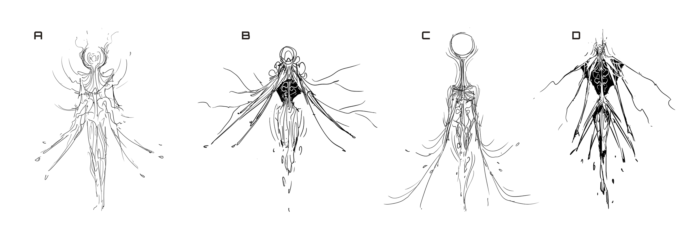

This work is the result of a personal observation of the relationship between four different frameworks. These observations emerged from the components of the creative domain, though I would be interested if some of the ideas presented here could be transferable.
The initial observation that started the development of this representation was the following sketch:
It seemed that there was this direction of flow, between "things released" and "things consumed." People would create, and their creations would go on to people who would consume these creations. Based on their reactions, information would feed back to the people who create.
The loop revealed itself. It was a start, at least.
Driven by an intrigue to unveil the nature of this cycle, I began exploring different ways of visually representing this "information flow." Things started to become clear when I organzied both groups in concentric circles around each other. On one hand, you could see it as creators in the center, surrounded by curators, information flowing outwards. On the other hand, you could reconfigure it so consumers are in the center, surrounded by creators, information flowing inwards. Drawing these two configurations made me realize that both versions are the same thing. I was just turning the "mesh" that defined the relationship between the two groups inside-out.
Now it started getting exciting. No more was this a line curving to form a circle, it was a form. Whatever it was, it had some kind of dimension to it. What this meant was that, you could start point A, then walk in either direction, and end up at point B.
It was at this point that I needed to increase my resolution and define some more areas to work with. I thought, if the consumer level is at the end of this waterfall of information flow, how does one climb up? I split it into to main components: CRAFT and OPENNESS. At its most basic, these are the two fundamental components that let someone climb the waterfall of information flow.

While craft is pretty straightforward, in hindsight I should have picked a better word for openness, because the way I'm utilizing it here is in reference to having an interpretation. This interpretation drives the subjective preference of an individual, basically taste. Openness does influence this component, but I don't think it defines it. However, at the time of making this, I used openness, so just keep this in mind.
From there, the four frameworks revealed themselves:
CONSUMER, CREATOR, CURATOR, and ARTIST
From the point of the CONSUMER framework, you can either go in the OPEN direction or the CRAFT direction. CRAFT will take you to the CREATOR framework. In visual art terms, this is learning and practicing the fundamentals of drawing, painting, sculpting, etc; The degree of craftsmanship. The other direction, OPEN, will take you to the CURATOR framework. Developing taste, exploring all that there is to offer within a domain, learning the state of the domain, where is it headed, where has it been, what is its history, who's currently involved. But what's also important in the CURATOR framework is the interpretation as mentioned previously...to put simply, what is your own opinion of the various areas in the domain? Do you prefer hyperrealism, abstract stylization, or somewhere in the middle? Do you like the way movies are being shot, or did you prefer the way they were shot in the 80s? That's the CURATOR framework.
Now, yes, you can do both at the start. If you are completely starting out and doing both, then you'll be in the ARTIST framework, it's just that the radius of the toroid (the distance between consumer and artist) will be small. As you develop your skill and interpretation, the radius will increase and mature over time.
Now, that was a lot of information, hopefully it was clear, but in the event it wasn't, I made a Punnett Square diagram that abstractly describes how OPEN and CRAFT interact to form these groups.

Armed with my references and briefs, I began sketching. I started by just straight up combining the visual elements of each reference and blending them into one another. Soon it became clear that many elements were being repeated over each iteration, and so I went back and searched for one final reference. The white concentric ring reference. It was at that point that the design took a turn, leading more into the surreal and unfamiliar. It also began to unveil its elegant and focused composure as I explored further.
While I do like something in each iteration, these were the four that I thought were the strongest of the bunch. It was tough as it seemed I kept falling into the "sinister" path. I really enjoyed the vein structures appearing at the shoulders of D, and the cloak feeling of B. The wispy nature of A was quite interesting, too. However, A, B, and D all felt a bit too edgy for the fragile elegance that the mystical component was looking for. C felt like it had the right balance of a composed, unnerving, yet beautiful creature not of this world.

At the same time I was searching for a design, I was also searching for a moment to illusrtate this creature. I kept thinking about the prompt, "sensing the landscape." Compositions of the creature looking onwards, out into the horizon seemed to hit close to what I was looking for.

The final illustration. A large emphasis was put on depicting the Mindhunter's sensing ability. Having the creature affect its immediate environment in some way was necessary in order to communicate that idea. And with that the Mindhunter was completed.